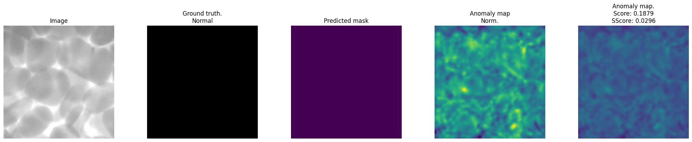
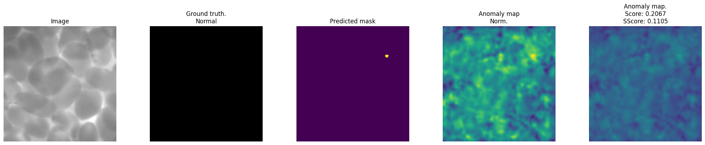
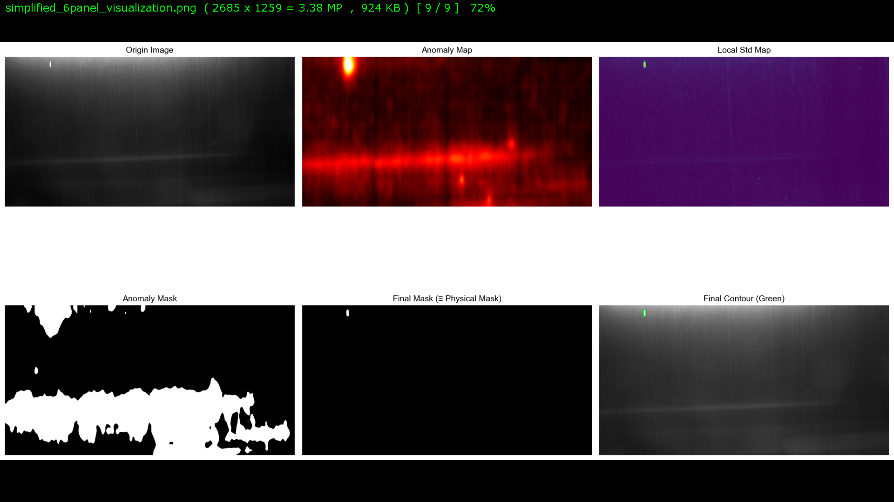
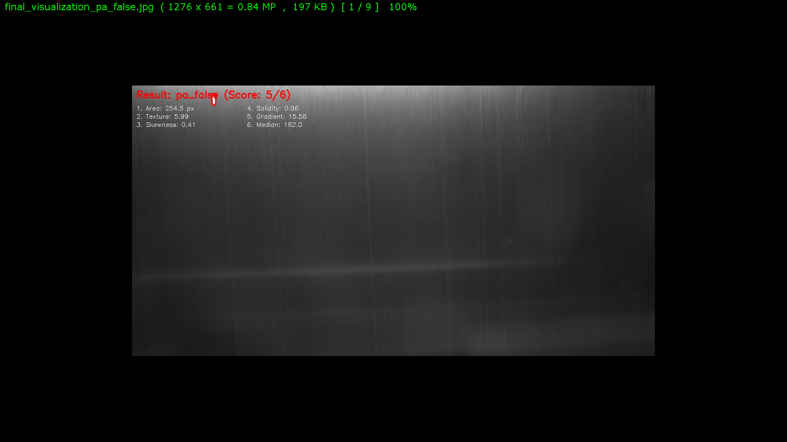
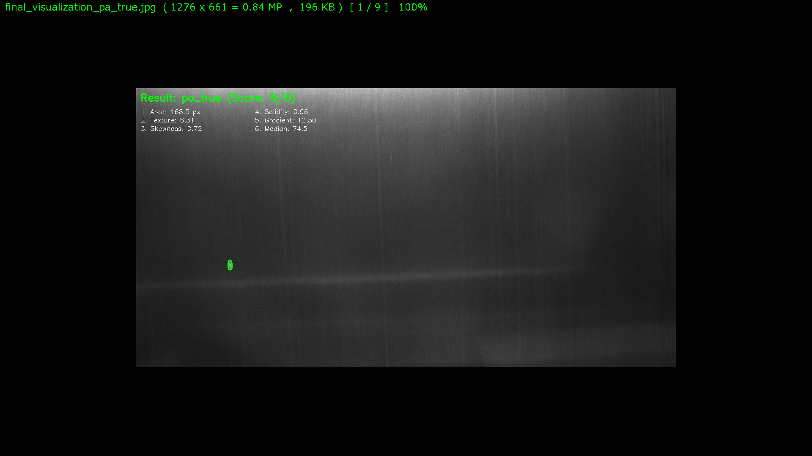
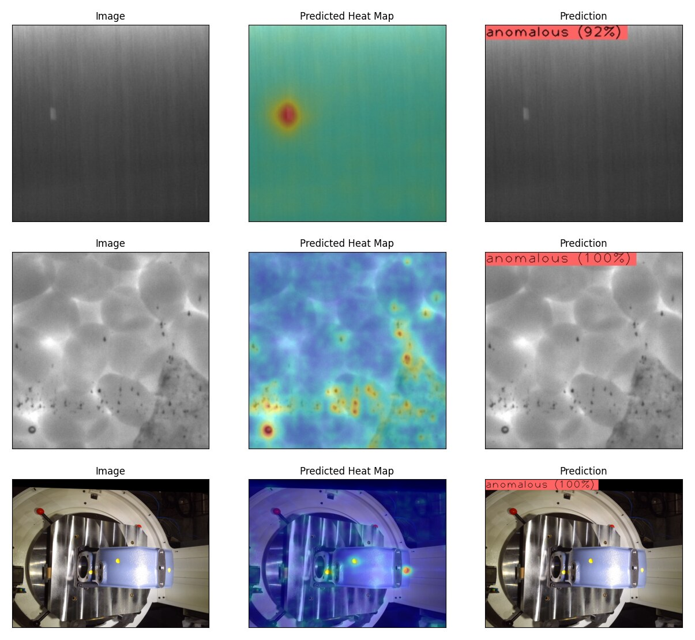
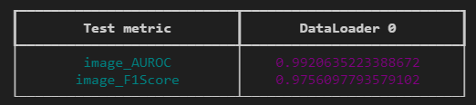
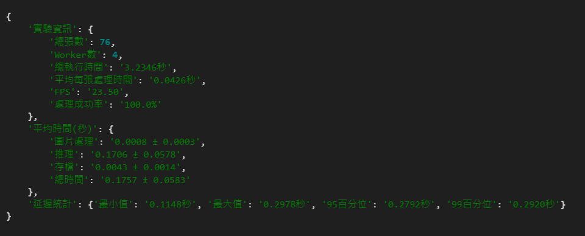
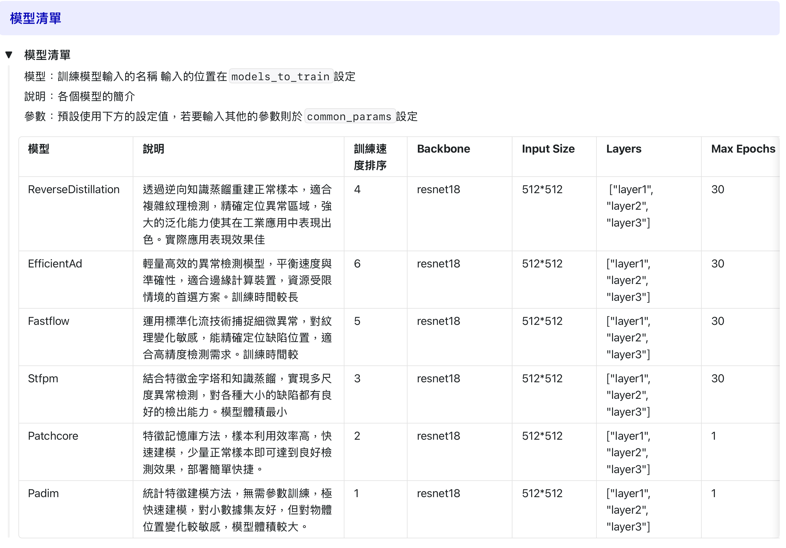
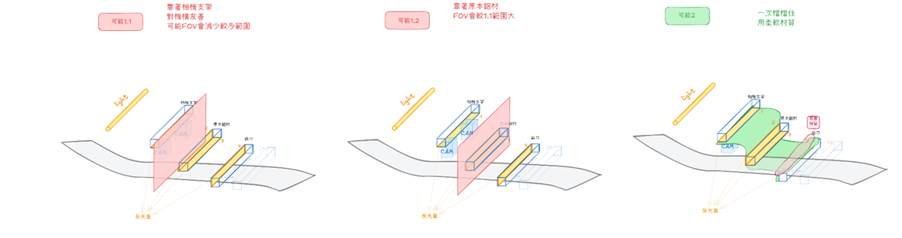

工業表面瑕疵檢測系統
2024.09 – 2026.03 · 主要開發負責
三個產線案表面上獨立，但中間那段不該重複做。所以真正解的是兩層問題：每個現場條件都不同，而模型訓練與版本管理應該只做一次。
- 複合材料連續產線 隨產線班次每日運行，約 9 個月、二十餘個版本迭代後凍結；NSSM 服務化：開機即啟動、crash 自動重啟；通過委託單位正式稽核
- 粒子分析邏輯 小面積 × 高圓形度 × 低熵暗點，搭配覆蓋機制消除約 70% 外膜髒污誤報
- 食品加工產線 ReverseDistillation + ResNet34，驗證 AUROC 1.0 / F1 1.0，OpenVINO 匯出 69.4 MB；現場推論 4 張 512×512 約 0.25 秒
- 工具機產業展會 3.5 週從零到功能全數完成，含相機架設、光源、取像、訓練、驗證；依 CPU-only 條件選 STFPM，模型僅 21.35 MB
- 共用訓練後端 六類端點、anomalib 六模型 benchmark、branch + tag 管理 4 客戶約 50 個 tag；推論非同步化解決 FastAPI 阻塞










Python · PyTorch · anomalib · OpenCV · FastAPI · OpenVINO · Intel Arc GPU · NSSM